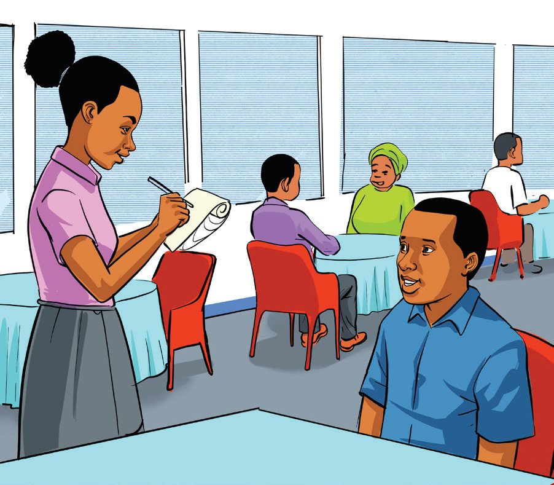

(e) Study how to make a polite request or offer using the word ‘some’ in the examples provided. Then, practise talking/signing with your fellow pupils.

Would you like some orange juice?
No, thank you.
Can I have some water, please?
(f) Study the information in the speech bubbles in the pictures provided below. Then, practise using the word ‘any’ by talking/signing to your fellow pupil or pupils.
Questions
Negative statement
Is there any fried chicken?
No, we don’t have any fried chicken and we don’t have fried fish either.